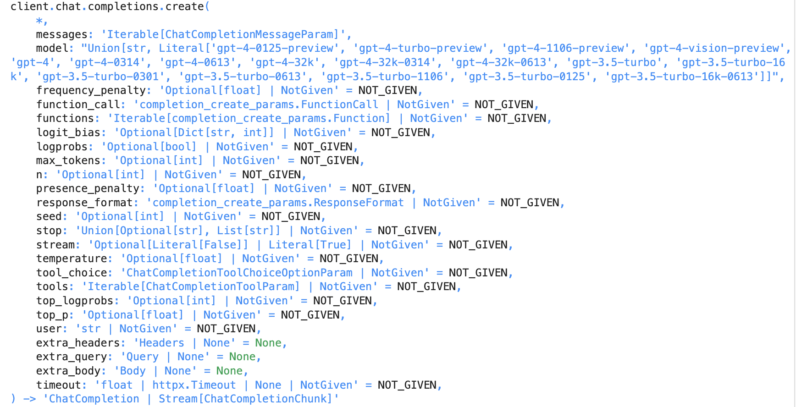
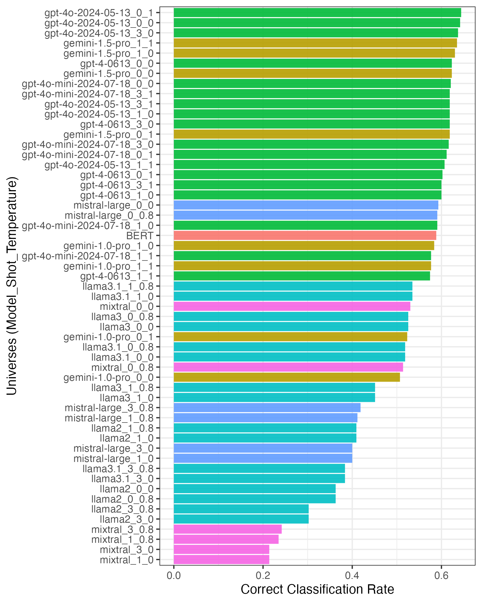
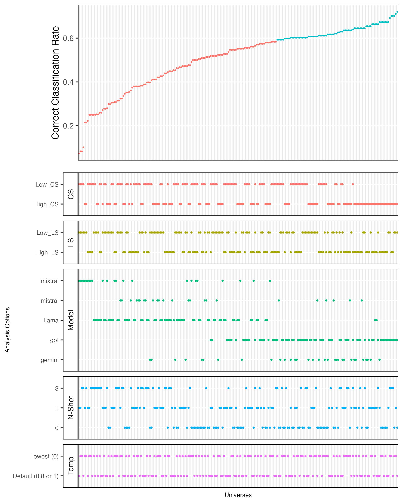
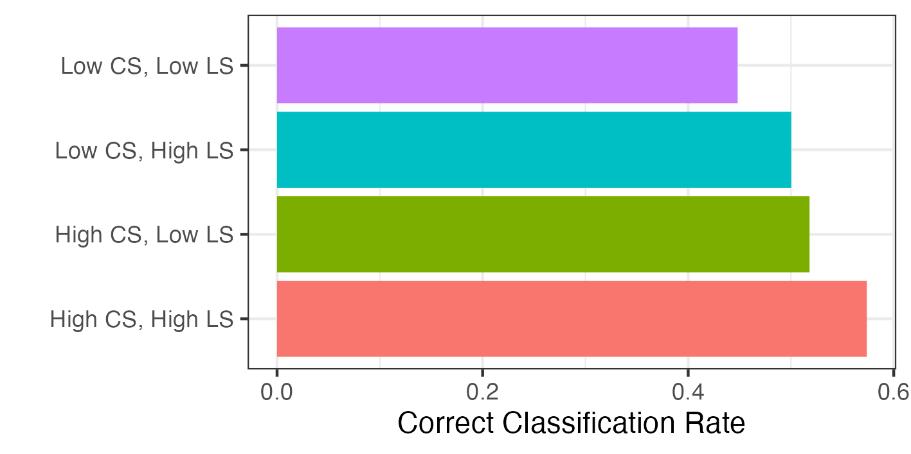
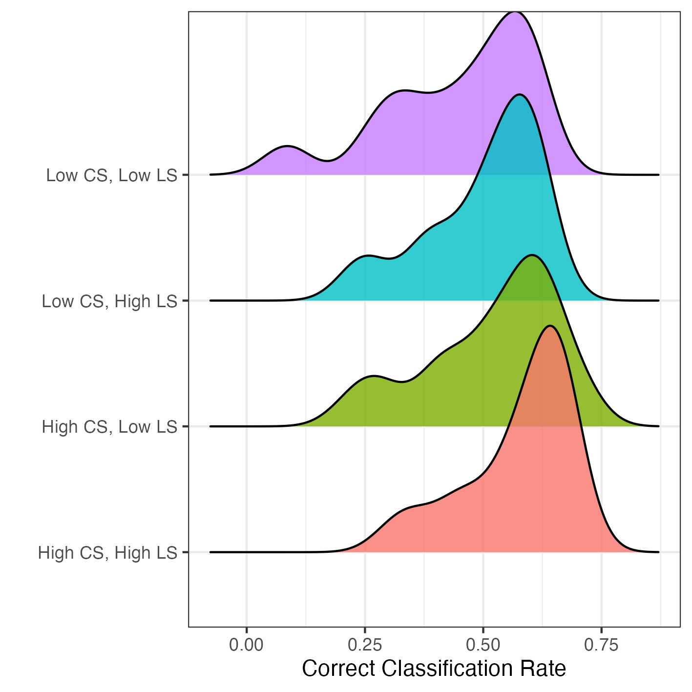
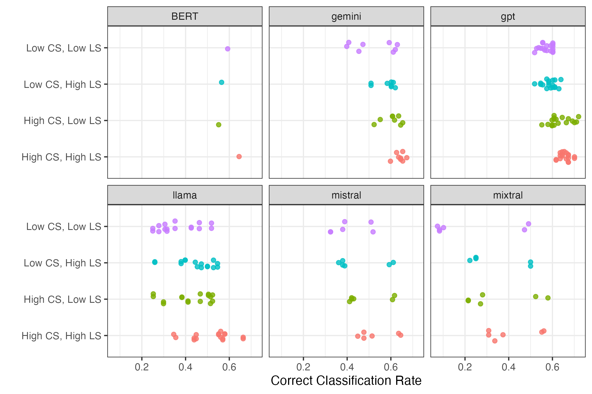
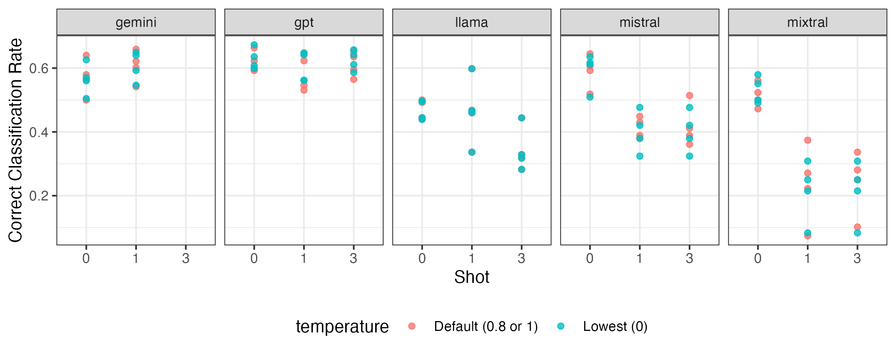

Internet Research with Foundation Models?
Multiverse Analysis of
Linguistic and Contextual Bias in
Large Language Models
Justin Chun-ting Ho
Amsterdam School of Communication ResearchIn collaboration with Chung-hong Chan (GESIS)
Slides: http://bit.ly/CAT4SMR_slides
"English before Everything"
(Baden et al., 2022)
Indo-European Languages

Democracy Index

GDP per Capital

- Performance are affected by linguistic and societal information encoded in training data
- Linguistic bias: discrepancy in performance across languages
- Contextual bias: discrepancy in performance across materials produced in different social contexts
What about ChatGPT?
(and other foundation models)
Multilingual LLM
- 65 out of the 95 languages supported by ChatGPT are Indo-European languages
- Most texts in Red Pajama 2 are English: 14.5 billion out of 20.8 billion. All are Indo-European languages
- Over 40% documents of Common Crawl are English
Analysis
Multiverse Analysis
Multiverse Analysis
 (Source: Sarma A et al. (2021). “multiverse: Multiplexing Alternative Data Analyses in R Notebooks (Version 0.6.1).” OSF Preprints. https://github.com/MUCollective/multiverse.)
(Source: Sarma A et al. (2021). “multiverse: Multiplexing Alternative Data Analyses in R Notebooks (Version 0.6.1).” OSF Preprints. https://github.com/MUCollective/multiverse.)
Methodology
- Data: Parliamentary texts from UK, Basque, HK, Taiwan
- Task: Predict policy area based on Comparative Agendas Project
- Synthetic data pairs to test LS and CS
Synthetic Data Pairs
| High LS (Indo-European) |
Low LS (Non-Indo-European) |
|
| High CS (European) |
UK (English), Basque (English) |
UK (Chinese), Basque (Basque) |
| Low CS (Non-European) |
HK (English), Taiwan (English) |
HK (Chinese), Taiwan (Chinese) |
Multiverse Analysis
| Multiverse elements | Options | n options |
|---|---|---|
| LLM Model | GPT-4 GPT-4o GPT-4o mini Mixtral Mistral Large Llama 2 Llama 3 Llama 3.1 Gemini 1.0 Pro Gemini 1.0 Pro Gemini 1.5 Pro |
11 |
| Temperature | Lowest (0) Default (0.8 or 1) |
2 |
| Setup | Zero-shot One-shot Three-shot |
3 |
Results
Multiverses
Specification Curve
Do Linguistic and Contextual Similarity matter?
Case Type
Case Type
Case Type by Model
Does Example Help?
N-Shot
Takeaways
- Linguistic and Contextual Biases exist in LLM
- Hierarchy of case types
- Model matters
Considerations
- What about open science?
- Cost (monetary, or even environmental?)